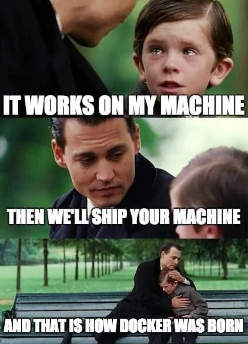
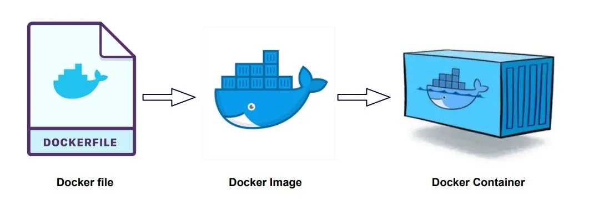

Docker Desktop installed and running.
Python 3.11+ for local development (the container itself bundles its own Python).
A code editor such as VS Code with a terminal you're comfortable using.
Azure CLI installed (az) and authenticated with an active Azure subscription (personal or Capgemini).
Git installed, to clone the seminar repo containing the demo source files.
Familiarity with Python and basic command line usage is assumed. No prior Docker or Azure experience is needed - that's what we're here to learn!
This lab introduces Docker as the foundational tool for packaging and deploying AI/ML applications and models. As we data scientists transition into AI and ML engineering roles for our clients, the ability to ship models as reliable and reproducible services becomes essential.
By the end of the lab we'll have used Docker to package a FastAPI sentiment analysis API (serving a real model via ONNX) into a container, deployed it to Azure, and have it as a live endpoint.
We'll build the Dockerfile from scratch using multi-stage builds and uv for fast dependency installs, test locally, then push to Azure Container Registry and deploy on Azure Container Apps.
By the end of this seminar, wel'll be able to:
Docker is and why it matters for AI engineeringDockerfile for an AI/ML application with model dependenciesFastAPI model endpoint to AzureWe're using Docker and containerisation interchangeably here, although they aren't the same thing. Containerisation is the concept of isolating an application and its dependencies into a portable, self-contained unit that runs consistently across environments. Docker is a specific tool that implements that concept and made it accessible to the mainstream although there are alternatives, e.g. Podman. Just remember that when we talk about Docker, we're reffering to the whole concept of containerisation through Docker's specific approach.
| Topic | Details |
|---|---|
| What is Docker, and why should I care? | Reproducibility crisis, dependency hell, “works on my machine” |
| Core Concepts | Dockerfiles, images, containers, layers, registries, tags, volumes, networks |
| Building our API | FastAPI + model, Dockerfile, build and run locally |
| Deploying to Azure | Pushing to ACR, deploying to Azure Container Apps |
| Troubleshooting and best practices | Multi-stage builds, .dockerignore, health checks, security |
| Q&A and wrap-up | Discussion, resources, preview of lab 2 |
Imagine you bake a cake in your kitchen and it turns out perfectly. You hand someone the recipe, but their oven runs hotter, their flour is a different brand, and they're missing one ingredient. They follow the same steps and get a completely different result. The process of trying to reliably deploy code, whether that's a simple application or a full AI and ML model, into production from your local development environment can be much like this cake analogy.

A common problem we face arises when code behaves differently across machines due to mismatched Python or library versions. It might work on your machine, but not on someone elses. Things can get really complicated where projects have complex software stacks with strict version requirements such as TensorFlow tied to specific CUDA releases, or PyTorch conflicting with certain NumPy versions.
The solution? Ship the entire kitchen - oven, ingredients, and all - so the cake comes out the same every time, no matter where it's made. By containerising and packaging our code, libraries, and system dependencies Docker enables exact recreation of our runtime environments ensuring reproducibility whereever we run our code.
To summarise then, Docker helps with:
Becuase virtual environments only isolate Python packages. They do not isolate system libraries (like CUDA drivers), operating system differences (Windows vs Linux), or system-level dependencies.
To containerise any of our code we need to understand some of the basics of how the Docker architecture interacts with each other: the Docker Engine(aka the daemon), the Docker CLI, and a registry.
The Docker CLI (client) sends commands to the Docker Engine (daemon), which does the heavy lifting of building images, starting containers, managing networks and volumes. When you type docker build or docker run, the CLI makes an API call to the daemon, which executes it and returns the result. Images are stored locally on your machine after being built or pulled, and can be pushed to a registry like Docker Hubor Azure Container Registry for sharing.
Pronounced "dee-mon". The background process that manages Docker objects - it listens for API requests from the CLI, and handles building images, running containers, managing networks, and storing volumes. You never interact with it directly; the CLI talks to it for you.
Docker Desktop bundles the Engine and CLI together and gives you a GUI on top, which is what most people install locally (what we've used here), but underneath it's still the same CLI-to-daemon relationship.
Most of the time though, you'll be focusing on these three core elements and concepts of Docker: dockerfiles, images, and containers.

Virtual machines and containers both solve the problem of running software in an isolated environment, but they do it very differently. A VM virtualises an entire operating system — it runs a full guest OS, which means each VM carries its own kernel, system libraries, and binaries. This makes VMs heavy, typically gigabytes in size and taking minutes to boot. Containers take a lighter approach: they share the host machine's kernel and only package the application and its specific dependencies. The result is an isolated process that's megabytes rather than gigabytes, starts in seconds, and can be moved between machines with almost no friction
This is a text file that contains all the instructions and commands needed to build an image. This file adheres to specific format and set of instruction to build the required docker image. But a Dockerfile is not just a setup script - it's a contract.
The Dockerfile explicitly answers the question: "What must exist for my application to run?"
When you write a Dockerfile, you are documenting your assumptions in executable an form. Every instruction in a Dockerfile exists because something once broke without it. Missing system libraries. Wrong Python version. A dependency that worked locally but failed in CI. Dockerfiles are written in the blood of past outages and failed builds.
When we write a Dockerfile, we've got to think about how Docker builds images in layers, and how each instruction in our Dockefile creates a new one. When you rebuild an image, Docker checks each layer from top to bottom: if nothing has changed in that layer or any layer before it, it reuses the cached version and skips the work. The moment something changes, that layer and everything below it gets rebuilt from scratch. This is why ordering your Dockerfile carefully can mean the difference between a five second rebuild and a five minute one.
We'll be exploring our own Dockerfile in a moment, but in the meantime here are some of the key commands you'll almost always come across in any Dockerfile.
FROMEvery Dockerfile starts with this command which sets the base image you're building on top of. You'll typically be pulling a base image from somewhere like Docker Hub and its' list of official images. Without a base image, you'd have to set up the operating system, install Python, configure paths, and handle all the low-level plumbing yourself.
Base images range from bare-bones to full-featured. alpine is tiny (around 5MB) but can cause compatibility issues with Python packages that expect standard Linux libraries. slim variants like python:3.xx-slim strike a good balance — small enough to keep your image lean, complete enough that most packages install without fuss. The full python images include compilers and build tools, which is useful if your dependencies need to compile C extensions during install, but adds significant size.
WORKDIRSets the working directory inside the container. Every command that follows runs relative to this path. Think of it like running cd /path/to/somewhere on the command line.
COPYBrings files from your local machine into the image, and this is where ordering the image layers becomes critical. Typically, we deliberately want to copy our package dependencies, e.g. requirements.txt, and install them on their own before copying the rest of our application code.
The reason: once we've copied in the requirements and installed them Docker will cache that entire installation layer. As long as our requirements.txt hasn't changed, Docker skips the install entirely on subsequent builds.
If we copied all the code first and then installed dependencies, changing a single line of application code (not matter how small or trivial) would invalidate the entire cache and force a full reinstall of every package which can take a very long time to rebuild.
RUNExecutes commands during the build process. This is where you install dependencies, e.g. RUN uv pip install -r requirements.txt, install system packages (RUN apt-get install), or run any setup scripts. Each RUN instruction creates a layer, so it's common to chain related commands together with && to keep the layer count down.
EXPOSEDocuments which port your application listens on. It doesn't actually publish the port but it signals to anyone reading the Dockerfile (or to orchestration tools) what port to expect.
Think of a container as a room with no doors. The app inside is listening on a given port that we expose (very commonly port 8000), but nothing can reach it. When we eventually run our container we need to cut a door between our machine and the container, connecting the two. We do this with the CLI command docker run -p our_port_number:the_container_port_number. It's common for these match, e.g. 8000:8000, but they don't have to. Just remember that the port on the right side has to match what you say is exposed in the Dockerfile.
CMDDefines the default command that runs when a container starts from the image. Very commonly, this will be some sort of command that actually begins your application.
A Docker image is built automatically after executing the instructions from a dockerfile. It' a frozen blueprint of your application. It contains everything your app needs to run - your code, runtime, libraries, system tools, and configuration defaults - but it doesn't actually do anything on its own. It's not alive.
Think of a Docker image like a restaurant recipe card. It lists ingredients, steps, and instructions. You can photocopy it a thousand times, but until you cook the dish, nothing happens. That cooking step is what creates a container.
What makes images powerful is that they are immutable. Once built, they never change. That immutability is the real reason Docker works so well in production. If the same image runs on my laptop, on a staging server, and on production, then "it worked on my machine" stops being an excuse.
Images live in registries. When you run docker push in the CLI you upload your image to a registry like Docker Hubor more likely something like Azure Containe Registry. When someone else or a pipeline runs docker pull, they/it download it. This is how you move images from your laptop to a server, or share them across a team. The image is identical everywhere - that's the whole point.
A tag is a label you stick on an image to identify a specific version. This is done when you actually build the image. Tags are how we keep track of different versions. You might have my-image:v1, my-image:v2, and my-image:dev all sitting on your machine. Each points to a different immutable build. When you deploy, you specify which tag to use, for example my-image:v1 in staging, my-image:v2 in production so you always know exactly what's running where.
An image with a tag of latest doesn't actually mean "the most recent build." It's just the default tag name. If you build my-image:v3 and then run docker pull my-image:latest, you'll get whatever was last tagged as latest, which might be weeks old. For anything beyond local development or demonstrations, use explicit version tags so there's no ambiguity.
Git based tags tie images directly to your source code. Consider using the commit hash as the tag for an image. The commit hash is the most reliable because it's unique and immutable. You can always trace an image back to the exact code that built it.
Do something important here.
Default blue note — use for general information and context.
Orange warning — use for gotchas, caveats, things that could go wrong.
Green tip — use for best practices, shortcuts, pro tips.
Use the yaml-block class for config files.
key: value nested: property: something list: - item one # inline comment - item two
$ long-command \ --first-flag value1 \ --second-flag value2 \ --third-flag value3
Docker Passing In Progress Breaking Optional
Use this for destructive actions like deleting resources or irreversible operations.
$ dangerous-command --force